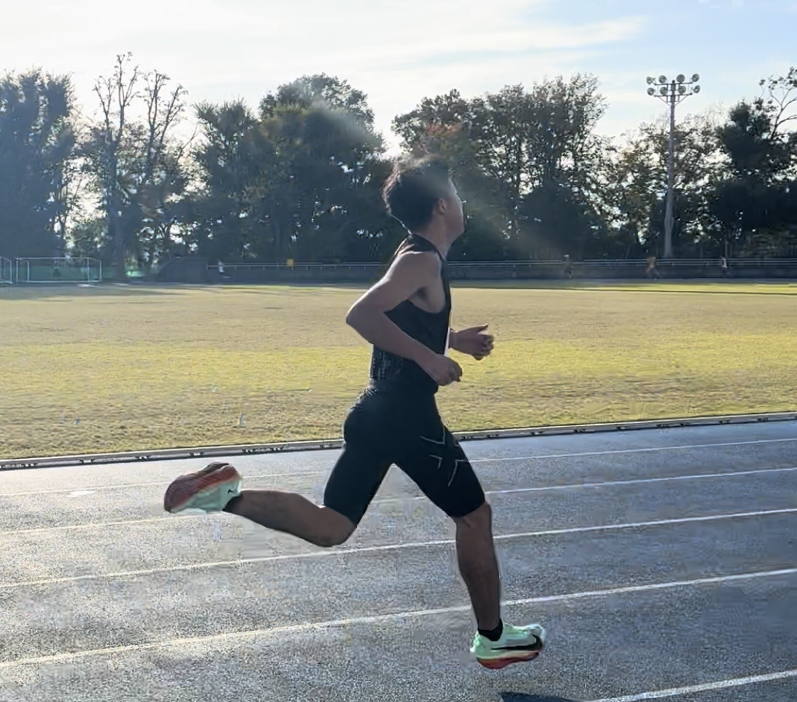

市民ランナーBLOG
走ることで、
日常が変わる。
市民ランナーBLOG
走ることで、
日常が変わる。

池田力
5000m15分切りを目指して日々トレーニングしています
このブログでは、練習記録・レース結果・ランニングアイテムなどの発信をしています。
主な自己ベスト
| 3000m | 8'46 |
| 5000m | 15'06 |
目標
5000mで15分を切ること。
仕事と両立しながら、速くなること。